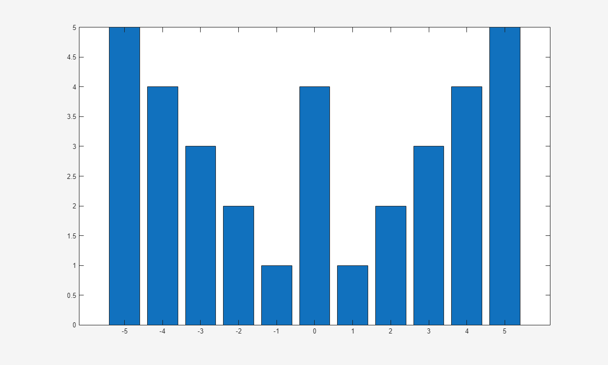
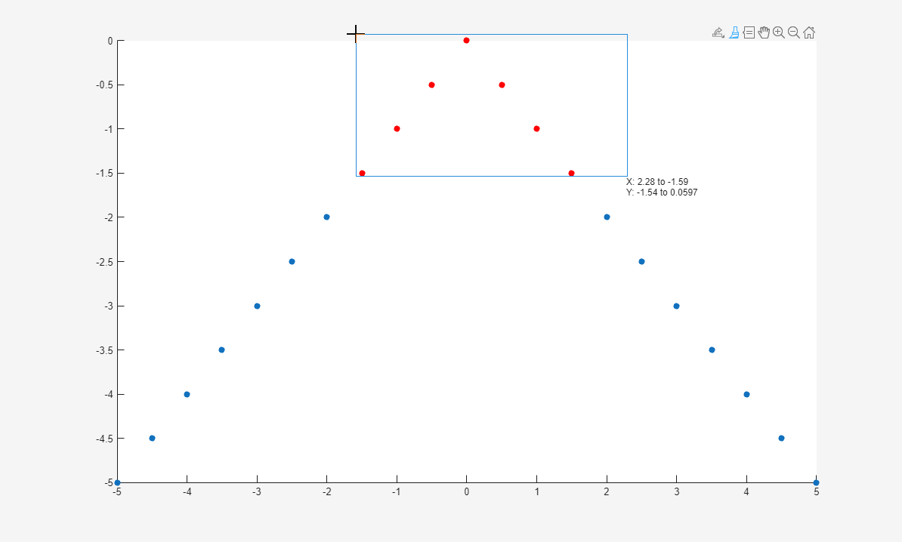
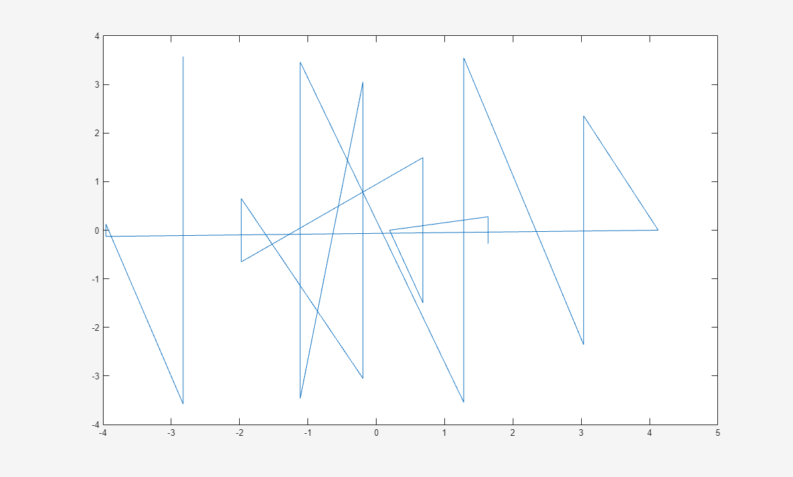
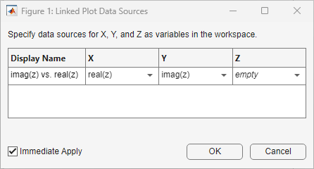

linkdata
Automatically update charted data
Description
Use data linking to synchronize charts and their workspace variables. Linked charts automatically update with changes to workspace variables, and workspace variables automatically update with chart modifications made via the brush tool.
Link charts and workspace variables by using the linkdata function or
by clicking the Data Linking button on the Tools
tab of a figure.
Creation
Syntax
Description
linkdata on turns on data linking mode for the current
axes.
linkdata off turns off data linking mode.
linkdata toggles the data linking mode between
'on' and 'off'.
linkdata showdialog opens the Linked Plot Data
Sources dialog box. Use this syntax to interactively synchronize a chart
with workspace variables.
linkdata( specifies
the data linking mode for the specified figure. Use single or double quotation marks
around the options fig,___)'on' and 'off'. For example,
linkdata(fig,'on').
l = linkdata creates a LinkData object. This
syntax is useful for querying the data linking mode.
l = linkdata( creates a
fig)LinkData object for the specified figure.
Input Arguments
Properties
Examples
Create a bar chart and enable data linking. Data linking synchronizes the bar chart
with the x and y variables in the
workspace.
x = linspace(-5,5,11);
y = abs(x);
bar(x,y)
linkdata on

Modify one of the values in y. Note that the bar chart
immediately updates to reflect the change.
y(6) = 4;

Interactively delete workspace values by selecting them in a chart,
using linkdata and the brush tool.
Create some data to plot. Note that x and y
contain 21 values.
x = linspace(-5,5,21); y = -abs(x); lengthX = length(x) lengthY = length(y)
lengthX =
21
lengthY =
21
Plot the data, then enable both data linking and brushing.
scatter(x,y,'filled') linkdata on brush on
Highlight the data values you want to delete. To remove the brushed data from the chart, right-click on a brushed value and select Remove Brushed from the context menu.

The chart is linked to its data sources, so deleting values from the chart also
deletes them from the data sources. Note that x and
y now contain only 14 data values.
lengthX = length(x) lengthY = length(y)
lengthX =
14
lengthY =
14
Use data linking with complex numbers. When you plot complex data,
the real and imaginary parts of the data do not correspond to different workspace
variables. As a result, the linkdata function cannot identify data
sources for the x- and y-axes. To link complex data,
you must manually specify the real part of the complex data as the
x-component and the imaginary part as the
y-component.
First, create a matrix of complex data values and plot them. Then, open the
Linked Plot Data Sources dialog box by calling linkdata
showdialog.
z = eig(randn(20,20));
plot(z)
linkdata showdialog

Manually specify the real and imaginary parts of the data by typing
real(z) and imag(z) in the text boxes under
X and Y.

Now the chart is linked to its data sources. If you change z,
then the plot will update to reflect the new data.
To avoid using the dialog box, you can specify the data sources when first plotting the data values.
z = eig(randn(20,20)); plot(z,'XDataSource','real(z)','YDataSource','imag(z)') linkdata on
Tips
If
linkdatacannot unambiguously identify data sources for a chart, then the chart will not synchronize with workspace variables. If you calllinkdataand your chart does not update when you change a variable, then open the Linked Plot Data Sources dialog box by callinglinkdata showdialogand manually link the chart to its data sources.The
linkdatafunction updates linked data sources and charts around twice a second. To smoothly animate changes in data values, create loops that execute two times per second or less. For more information, see thepausefunction.Once a chart is synchronized with its workspace variables, programmatic changes to the data properties of the chart (for example,
XData) do not update the workspace variables. Workspace variables only update when you modify plotted data interactively, using the brush tool.
Algorithms
Data linking connects a chart and its workspace variables using the chart's data source
properties (for example, XDataSource). When you turn on data linking for a
figure, MATLAB® compares variables in the workspace to plotted data in the figure. When it finds
a match, MATLAB assigns that variable to the appropriate data source property of the chart.
Version History
Introduced in R2008a